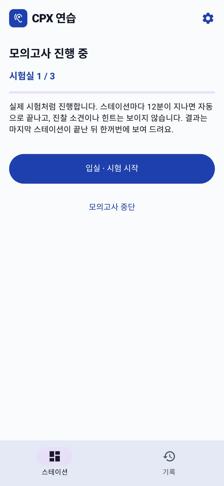
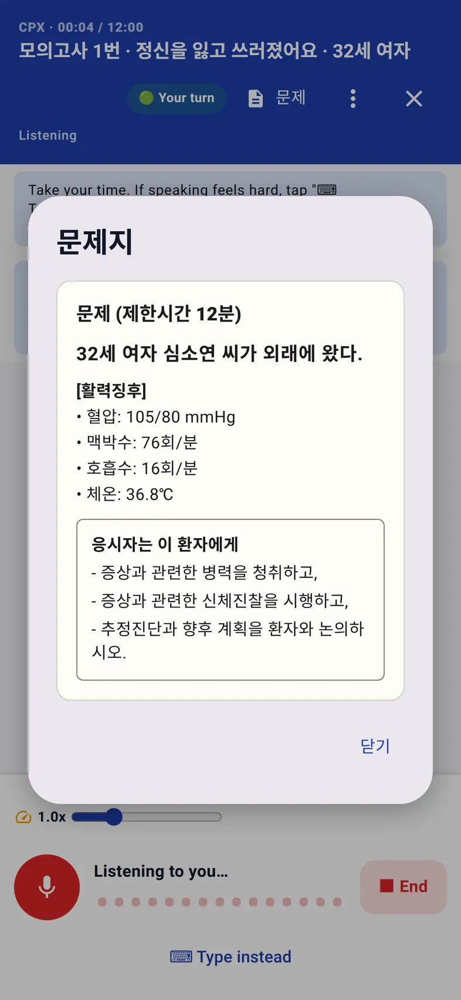
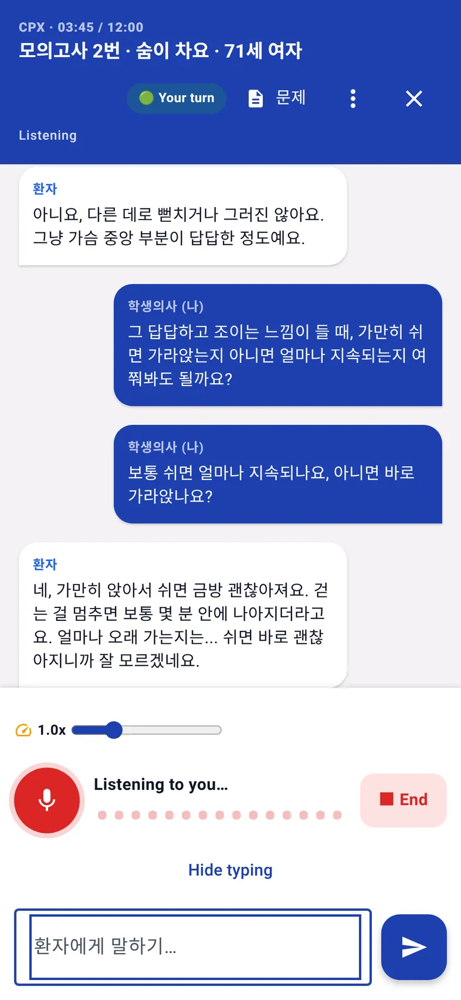
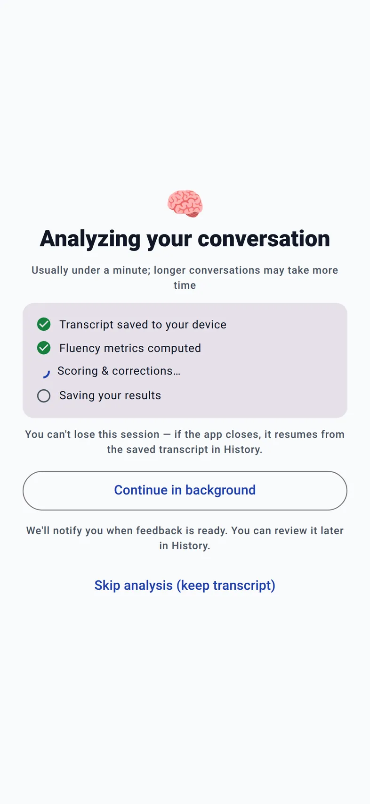

홈 › KMLE CPX 연습 › 실전 모의고사
실전 모의고사
CPX 실전 모의고사, 3개 스테이션 치러 본 결과
연습 스테이션은 힌트와 진찰 소견을 보면서 할 수 있다. 실전 모의고사는 다르다. 서로 다른 임상표현 스테이션을 연달아 들어가고, 12분이 지나면 자동으로 끝나고, 결과는 마지막 방을 나와서야 한꺼번에 나온다. 웹 앱에서 '빠르게 3개'를 실제로 치러 봤다.
1. 시작: 9개 또는 빠르게 3개
CPX 홈의 실전 모의고사에는 두 버튼이 있다. 실제 시험처럼 진료문항 9개를 연달아 보는 9개 스테이션과, 시간이 없을 때 쓰는 빠르게 3개. 스테이션은 서로 다른 임상표현에서 무작위로 뽑힌다. 이번에 나온 세 방은 이랬다.
| 시험실 | 임상표현 | 환자 |
|---|---|---|
| 1번 | 정신을 잃고 쓰러졌어요 | 32세 여자 |
| 2번 | 숨이 차요 | 71세 여자 |
| 3번 | 잠을 못 자요 | 53세 남자 |


2. 연습 모드와 무엇이 다른가
- 12분 자동 종료. 상단에 "CPX · 03:45 / 12:00"이 흐르고, 12분이 되면 내가 끝내지 않아도 방이 닫힌다. 이번에도 세 방 모두 12분 근처에서 자동으로 끝났다.
- 힌트와 진찰 소견 없음. 연습 모드에서는 진찰을 말하면 소견이 화면에 뜨지만, 모의고사에서는 보이지 않는다. 환자의 반응만으로 판단해야 한다.
- 결과는 마지막에. 방을 나오면 채점이 뒤에서 돌고, 다음 방으로 넘어간다. 점수는 마지막 방이 끝난 뒤 한꺼번에 보여 준다.


3. 결과: 210 / 300점, 불합격권
| 시험실 | 점수 | 판정(추정) |
|---|---|---|
| 1번 · 정신을 잃고 쓰러졌어요 | 53 | 미통과 |
| 2번 · 숨이 차요 | 73 | 통과 |
| 3번 · 잠을 못 자요 | 84 | 통과 |
세 방 중 두 방을 통과했는데 결과는 불합격권이었다. 앱은 실제 시험이 스테이션별 기준점수의 합과 통과 스테이션 수로 판정한다는 점을 흉내 내서, 두 조건을 모두 본다. 화면의 설명을 그대로 옮기면 "여기서는 총점 72% 이상, 스테이션 72점 이상을 2개 이상으로 계산했습니다." 210점은 300점의 70%라서 통과 스테이션 수를 채우고도 총점에서 떨어졌다.
교훈은 분명하다. 한 방을 크게 망치면 다른 방을 잘 봐도 총점이 버티지 못한다. 실제 시험의 기준점수는 공개되지 않기 때문에 이 판정은 참고용 추정이고, 앱도 결과 화면에 그렇게 적는다.

4. 53점짜리 방에서 무슨 일이 있었나
1번 방은 "계단을 오르다 정신을 잃었다"는 32세 여자였다. 학생의사는 스트레스와 불안으로 인한 미주신경성 실신이라고 설명했다. 실제 진단은 중증 대동맥판협착증이었다.
결과표 맨 위에 빨간 상자가 떴다. "[심각] 운동 중 실신 및 흉통을 미주신경성 실신으로 오진하여 위험을 과소평가함." 그 아래에는 학생이 실제로 한 말이 인용되어 있고, 놓친 핵심 항목이 예문과 함께 나온다.
- 누운 자세와 선 자세에서 혈압·맥박을 측정해 기립성 저혈압 확인 — 예: "누워서 한 번, 일어서서 한 번 혈압을 재 보겠습니다."
- 운동 중 실신, 가슴 통증·두근거림을 동반한 실신이 생기면 즉시 응급실로 오도록 안내 — 예: "운동하다 쓰러지거나 가슴이 아프고 두근거리면서 쓰러지면 바로 응급실로 오세요."
점수는 병력청취 71, 환자교육 67로 나쁘지 않았지만 신체진찰 33, 진단·계획 38에서 무너졌다. 실신 스테이션에서 "운동 중"이라는 단어를 듣고도 심장성 실신을 먼저 배제하지 않으면 이렇게 된다.

모의고사를 쓰는 법
- 연습 모드로 틀을 잡은 뒤에. 임상표현별 질문 틀이 아직 없다면 모의고사는 점수만 깎는다. 공부 노트와 연습 스테이션을 먼저 돈다.
- 빠르게 3개로 시작. 방 사이 채점까지 40분 남짓 걸린다. 결과에서 가장 낮은 방의 임상표현을 다음 주 연습 목록에 넣는다.
- 시험 전에는 9개. 실제 시험처럼 9개 방을 연달아 보면 체력과 집중력이 어디서 떨어지는지 보인다.
- 화면은 켜 둔다. 진료 중에 화면을 잠그거나 다른 앱으로 가면 대화가 일시정지된다.